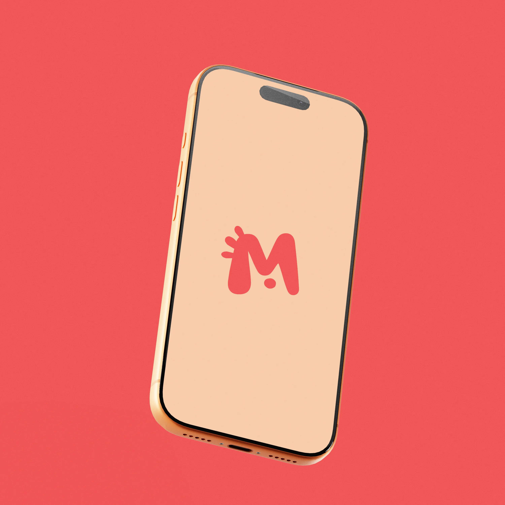
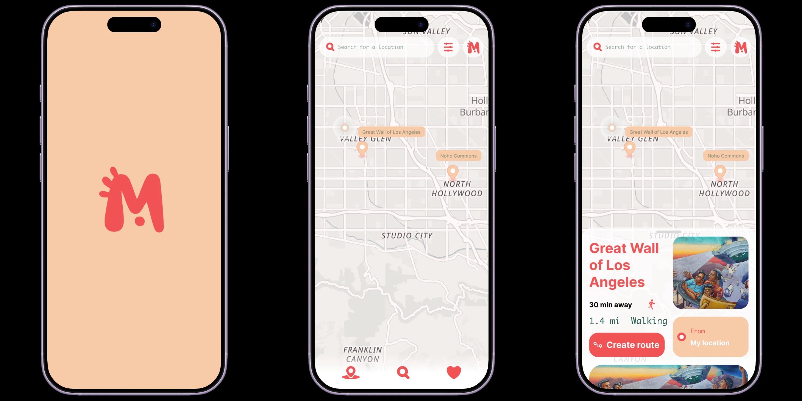
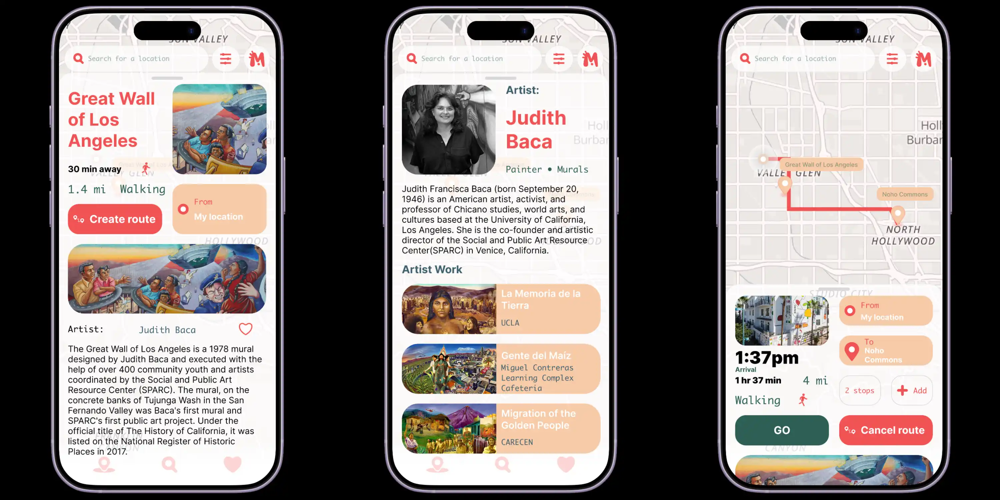
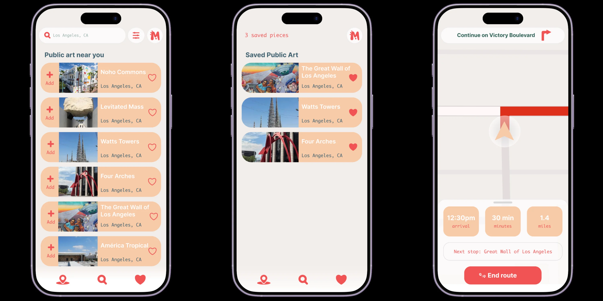

Case Study
MuralWalk: A Public Art Discovery App
MuralWalk is a mobile app concept designed and prototyped in Figma that helps people discover public art in their city, murals, sculptures, and installations alike. Public art is usually experienced by accident. MuralWalk turns it into something intentional: browse a map of nearby pieces, learn about each one and its artist, save favorites, and build a walking route connecting several pieces into one trip, complete with turn-by-turn navigation.

Project brief
This was a self-directed project, built to demonstrate digital product thinking alongside my print and identity work. I set my own brief: someone walking around a neighborhood has no easy way to know a piece of public art is nearby, who made it, or what it means. It's usually stumbled upon, if it's seen at all. I wanted to design an app that turns that into something deliberate, closer to how people already use a map app to plan a trip.
Prototype demo — pin tap, drag-to-expand, and route building
Core screens
The app's core loop runs from discovery to detail to a full walking route: tap a pin on the map, learn about the piece and its artist, save what you like, and string saved pieces into a walkable route with real turn-by-turn guidance.



What this project demonstrates
MuralWalk was built specifically to extend my design work into digital product thinking, information architecture (how a mural, its artist, and a multi-stop route relate to each other), interaction design (a draggable bottom sheet, a variable-driven map state), and a lightweight brand system built to support an app rather than a printed piece. It's the same design thinking behind my print work, applied to a different medium.